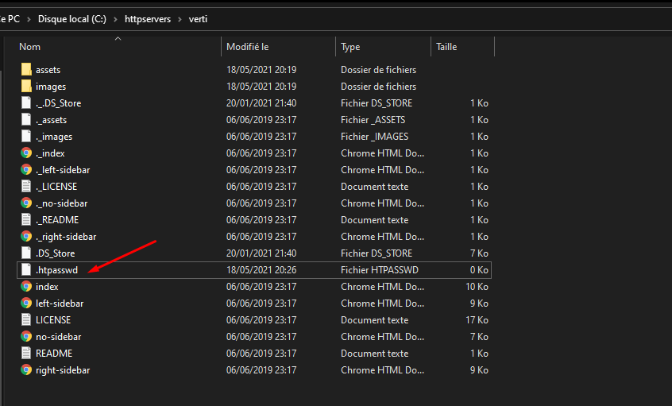
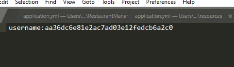
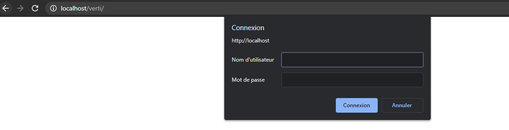

Protéger un dossier
Fichier .htpasswd
Pour protéger un dossier il est possible de rajouter un fichier .htpasswd à la racine d'un dossier.
Exemple dans le dossier /verti. 
Identifiants
Pour rajouter des identifiants, ouvrez le fichiers .htpasswd du répertoire protégé et rajoutez une ligne de la manière suivante:
nom_utilisateur:mdp_en_md5
Exemple:

Accéder au répertoire protégé
Il vous sera alors demandé un des identifiants d'une ligne de votre .htpasswd pour vous connecter.
Attention, le mot de passe demandé est celui qui n'est pas en MD5.
